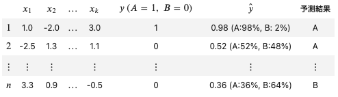
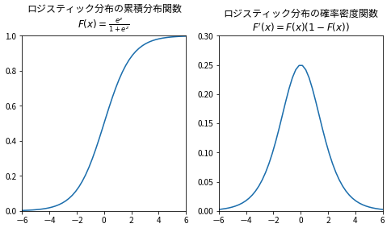
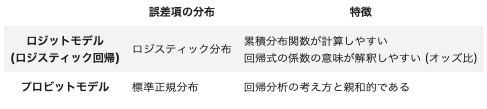

ロジットモデル (logit model)
Contents
ロジットモデル (logit model)¶
ロジットモデルは、ダミー変数などの2値変数 (0, 1の値をとる) を目的変数として、回帰分析を適用する手法のひとつである。
ロジスティック回帰（Logistic Regression）やロジット回帰（Logit Regression）とも言われる。
モデルの出力値をどちらかのカテゴリに所属する確率と見なすことで、カテゴリ予測を可能にする。
以下の例のように、各データがカテゴリA, Bのどちらに所属するかを\(A=0, B=1\)の2値で表し、予測を行う。

import pandas as pd
import statsmodels.api as sm
import statsmodels.formula.api as smf
%matplotlib inline
線形回帰との関係¶
ロジットモデルでは、 \(z=a+b_{1}x_{1}+b_{2}x_{2}+\dots+b_{k}x_{k}\) とすると 出力（予測結果）\(\hat{y}\) は以下の式から求める。
\(z\)は、線形回帰 (単回帰・重回帰) の出力である。
線形回帰の出力にロジスティック関数 \(\Lambda (x)={\displaystyle \frac{e^{x}}{1+e^{x}}}\) を適用したものが\(\hat{y}\)である。
ロジスティック関数は、以下を満たす累積分布関数である。
\(-\infty<x<\infty\) の区間で \(0<\Lambda(x)<1\)
\(\Lambda (x)\) を微分した導関数 \(\Lambda '(x)=\Lambda(x)\left(1-\Lambda(x)\right)\) は、 \(\Lambda'(x)>0\) (確率密度の条件)
ロジスティック関数が表す確率分布はロジスティック分布と呼ばれる。

線形回帰の出力を確率分布に変換する累積分布関数は、あらゆる実数の入力 ( \(-\infty<x<\infty\) ) に対応する確率を出力すれば何でも良い。
しかし、一般的にはロジスティック分布 (ロジットモデル) か標準正規分布 (プロビットモデル) が使われる。
背景 (読み飛ばし可)¶
※数学好きな人向け
回帰式の意味¶
\(y_{i}=1\) となる確率 \(p_{i}( X_{i})\) とそれ以外の確率 \(1-p_{i}( X_{i})\) の比 (オッズ比) \(O_{i}( X_{i})\) を
として、これを \(p_{i}( X_{i})\) について整理すると
となり、 \(p_{i}( X_{i})\) の予測 \(\hat{y_{i}}={\displaystyle \frac{e^{z_{i}}}{1+e^{z_{i}}}}\) と一致する。
つまり、 \(e^{z_{i}}\) は \(y_{i}=1\) となる確率のオッズ比であり、ロジスティック回帰で求めた \(z_{i}\) は対数オッズ比 \(logO_{i}( X_{i})\) と解釈できる。

誤差の分布¶
線形回帰と同じように誤差項 \(\epsilon\) を使って、 \(A_{i} =a+b_{1} x_{i1} +b_{2} x_{i2} +\dots +b_{k} x_{ik} +\epsilon _{i}\) とすると、
このとき、ロジットモデルは誤差項 \(\epsilon\) の分布にロジスティック分布を仮定している。 (プロビットモデルは正規分布)
ロジットモデルやプロビットモデルのように誤差項の分布とそれに対応する関数を用いて \(y\) を \(x\) と \(\epsilon \) の線型結合に分解して分析する手法を一般化線形モデル (generalized linear model) と呼ぶ。
パラメーターの求め方¶
通常、最尤法 (maximum likelihood method)、最尤推定 (maximum likelihood estimation, MLE) を用いる。
最尤法とは、関数 \(F(x)\) から元のデータ \((X_i,\ y_i)\ (i=1,\ 2,\dots,\ n)\) が再現される確率 (尤度) を最大化するようにパラメーターを決める方法である。
累積分布関数を \(F(x)\) とし、あるデータ \(X_{i}\ (x_{1} ,\ x_{2} ,\dots,\ x_{n} )\) が与えられたときに \(y_{i} =1\) となる確率を \(P(y_{i} =1\ |\ X_{i} )=F(a+b_{1} x_{i1} +b_{2} x_{i2}+\dots +b_{k} x_{ik})\) と表すと、 \(P(y_{i} =0\ |\ X_{i})=1-P(y_{i} =1\ |\ X_{i} )\) なので、尤度は以下の尤度関数 \(L\) で表わすことができる。
確率の積の形は、値が小さすぎて、コンピュータで計算しにくいため、対数をとる。
\(y_{i} =1\) のとき、 \(1-y_{i} =0\)、 \(y_{i} =0\) のとき、 \(1-y_{i} =1\) であるため、上式は下式のようにまとめられる。
この対数尤度 \(log\ L\) を最大化するパラメーター \(a,\ b_{1} ,\ b_{2} ,\dots ,\ b_{k}\) を母数の推定値とするのが最尤法。
Pythonでの実行方法¶
statsmodels.discrete.discrete_model.Logitを用いる。
# 関数の情報を確認
help(sm.Logit)
Help on class Logit in module statsmodels.discrete.discrete_model:
class Logit(BinaryModel)
| Logit(endog, exog, check_rank=True, **kwargs)
|
| Logit Model
|
| Parameters
| ----------
| endog : array_like
| A 1-d endogenous response variable. The dependent variable.
| exog : array_like
| A nobs x k array where `nobs` is the number of observations and `k`
| is the number of regressors. An intercept is not included by default
| and should be added by the user. See
| :func:`statsmodels.tools.add_constant`.
| missing : str
| Available options are 'none', 'drop', and 'raise'. If 'none', no nan
| checking is done. If 'drop', any observations with nans are dropped.
| If 'raise', an error is raised. Default is 'none'.
| check_rank : bool
| Check exog rank to determine model degrees of freedom. Default is
| True. Setting to False reduces model initialization time when
| exog.shape[1] is large.
|
|
| Attributes
| ----------
| endog : ndarray
| A reference to the endogenous response variable
| exog : ndarray
| A reference to the exogenous design.
|
| Method resolution order:
| Logit
| BinaryModel
| DiscreteModel
| statsmodels.base.model.LikelihoodModel
| statsmodels.base.model.Model
| builtins.object
|
| Methods defined here:
|
| cdf(self, X)
| The logistic cumulative distribution function
|
| Parameters
| ----------
| X : array_like
| `X` is the linear predictor of the logit model. See notes.
|
| Returns
| -------
| 1/(1 + exp(-X))
|
| Notes
| -----
| In the logit model,
|
| .. math:: \Lambda\left(x^{\prime}\beta\right)=
| \text{Prob}\left(Y=1|x\right)=
| \frac{e^{x^{\prime}\beta}}{1+e^{x^{\prime}\beta}}
|
| fit(self, start_params=None, method='newton', maxiter=35, full_output=1, disp=1, callback=None, **kwargs)
| Fit the model using maximum likelihood.
|
| The rest of the docstring is from
| statsmodels.base.model.LikelihoodModel.fit
|
| Fit method for likelihood based models
|
| Parameters
| ----------
| start_params : array_like, optional
| Initial guess of the solution for the loglikelihood maximization.
| The default is an array of zeros.
| method : str, optional
| The `method` determines which solver from `scipy.optimize`
| is used, and it can be chosen from among the following strings:
|
| - 'newton' for Newton-Raphson, 'nm' for Nelder-Mead
| - 'bfgs' for Broyden-Fletcher-Goldfarb-Shanno (BFGS)
| - 'lbfgs' for limited-memory BFGS with optional box constraints
| - 'powell' for modified Powell's method
| - 'cg' for conjugate gradient
| - 'ncg' for Newton-conjugate gradient
| - 'basinhopping' for global basin-hopping solver
| - 'minimize' for generic wrapper of scipy minimize (BFGS by default)
|
| The explicit arguments in `fit` are passed to the solver,
| with the exception of the basin-hopping solver. Each
| solver has several optional arguments that are not the same across
| solvers. See the notes section below (or scipy.optimize) for the
| available arguments and for the list of explicit arguments that the
| basin-hopping solver supports.
| maxiter : int, optional
| The maximum number of iterations to perform.
| full_output : bool, optional
| Set to True to have all available output in the Results object's
| mle_retvals attribute. The output is dependent on the solver.
| See LikelihoodModelResults notes section for more information.
| disp : bool, optional
| Set to True to print convergence messages.
| fargs : tuple, optional
| Extra arguments passed to the likelihood function, i.e.,
| loglike(x,*args)
| callback : callable callback(xk), optional
| Called after each iteration, as callback(xk), where xk is the
| current parameter vector.
| retall : bool, optional
| Set to True to return list of solutions at each iteration.
| Available in Results object's mle_retvals attribute.
| skip_hessian : bool, optional
| If False (default), then the negative inverse hessian is calculated
| after the optimization. If True, then the hessian will not be
| calculated. However, it will be available in methods that use the
| hessian in the optimization (currently only with `"newton"`).
| kwargs : keywords
| All kwargs are passed to the chosen solver with one exception. The
| following keyword controls what happens after the fit::
|
| warn_convergence : bool, optional
| If True, checks the model for the converged flag. If the
| converged flag is False, a ConvergenceWarning is issued.
|
| Notes
| -----
| The 'basinhopping' solver ignores `maxiter`, `retall`, `full_output`
| explicit arguments.
|
| Optional arguments for solvers (see returned Results.mle_settings)::
|
| 'newton'
| tol : float
| Relative error in params acceptable for convergence.
| 'nm' -- Nelder Mead
| xtol : float
| Relative error in params acceptable for convergence
| ftol : float
| Relative error in loglike(params) acceptable for
| convergence
| maxfun : int
| Maximum number of function evaluations to make.
| 'bfgs'
| gtol : float
| Stop when norm of gradient is less than gtol.
| norm : float
| Order of norm (np.Inf is max, -np.Inf is min)
| epsilon
| If fprime is approximated, use this value for the step
| size. Only relevant if LikelihoodModel.score is None.
| 'lbfgs'
| m : int
| This many terms are used for the Hessian approximation.
| factr : float
| A stop condition that is a variant of relative error.
| pgtol : float
| A stop condition that uses the projected gradient.
| epsilon
| If fprime is approximated, use this value for the step
| size. Only relevant if LikelihoodModel.score is None.
| maxfun : int
| Maximum number of function evaluations to make.
| bounds : sequence
| (min, max) pairs for each element in x,
| defining the bounds on that parameter.
| Use None for one of min or max when there is no bound
| in that direction.
| 'cg'
| gtol : float
| Stop when norm of gradient is less than gtol.
| norm : float
| Order of norm (np.Inf is max, -np.Inf is min)
| epsilon : float
| If fprime is approximated, use this value for the step
| size. Can be scalar or vector. Only relevant if
| Likelihoodmodel.score is None.
| 'ncg'
| fhess_p : callable f'(x,*args)
| Function which computes the Hessian of f times an arbitrary
| vector, p. Should only be supplied if
| LikelihoodModel.hessian is None.
| avextol : float
| Stop when the average relative error in the minimizer
| falls below this amount.
| epsilon : float or ndarray
| If fhess is approximated, use this value for the step size.
| Only relevant if Likelihoodmodel.hessian is None.
| 'powell'
| xtol : float
| Line-search error tolerance
| ftol : float
| Relative error in loglike(params) for acceptable for
| convergence.
| maxfun : int
| Maximum number of function evaluations to make.
| start_direc : ndarray
| Initial direction set.
| 'basinhopping'
| niter : int
| The number of basin hopping iterations.
| niter_success : int
| Stop the run if the global minimum candidate remains the
| same for this number of iterations.
| T : float
| The "temperature" parameter for the accept or reject
| criterion. Higher "temperatures" mean that larger jumps
| in function value will be accepted. For best results
| `T` should be comparable to the separation (in function
| value) between local minima.
| stepsize : float
| Initial step size for use in the random displacement.
| interval : int
| The interval for how often to update the `stepsize`.
| minimizer : dict
| Extra keyword arguments to be passed to the minimizer
| `scipy.optimize.minimize()`, for example 'method' - the
| minimization method (e.g. 'L-BFGS-B'), or 'tol' - the
| tolerance for termination. Other arguments are mapped from
| explicit argument of `fit`:
| - `args` <- `fargs`
| - `jac` <- `score`
| - `hess` <- `hess`
| 'minimize'
| min_method : str, optional
| Name of minimization method to use.
| Any method specific arguments can be passed directly.
| For a list of methods and their arguments, see
| documentation of `scipy.optimize.minimize`.
| If no method is specified, then BFGS is used.
|
| hessian(self, params)
| Logit model Hessian matrix of the log-likelihood
|
| Parameters
| ----------
| params : array_like
| The parameters of the model
|
| Returns
| -------
| hess : ndarray, (k_vars, k_vars)
| The Hessian, second derivative of loglikelihood function,
| evaluated at `params`
|
| Notes
| -----
| .. math:: \frac{\partial^{2}\ln L}{\partial\beta\partial\beta^{\prime}}=-\sum_{i}\Lambda_{i}\left(1-\Lambda_{i}\right)x_{i}x_{i}^{\prime}
|
| loglike(self, params)
| Log-likelihood of logit model.
|
| Parameters
| ----------
| params : array_like
| The parameters of the logit model.
|
| Returns
| -------
| loglike : float
| The log-likelihood function of the model evaluated at `params`.
| See notes.
|
| Notes
| -----
| .. math::
|
| \ln L=\sum_{i}\ln\Lambda
| \left(q_{i}x_{i}^{\prime}\beta\right)
|
| Where :math:`q=2y-1`. This simplification comes from the fact that the
| logistic distribution is symmetric.
|
| loglikeobs(self, params)
| Log-likelihood of logit model for each observation.
|
| Parameters
| ----------
| params : array_like
| The parameters of the logit model.
|
| Returns
| -------
| loglike : ndarray
| The log likelihood for each observation of the model evaluated
| at `params`. See Notes
|
| Notes
| -----
| .. math::
|
| \ln L=\sum_{i}\ln\Lambda
| \left(q_{i}x_{i}^{\prime}\beta\right)
|
| for observations :math:`i=1,...,n`
|
| where :math:`q=2y-1`. This simplification comes from the fact that the
| logistic distribution is symmetric.
|
| pdf(self, X)
| The logistic probability density function
|
| Parameters
| ----------
| X : array_like
| `X` is the linear predictor of the logit model. See notes.
|
| Returns
| -------
| pdf : ndarray
| The value of the Logit probability mass function, PMF, for each
| point of X. ``np.exp(-x)/(1+np.exp(-X))**2``
|
| Notes
| -----
| In the logit model,
|
| .. math:: \lambda\left(x^{\prime}\beta\right)=\frac{e^{-x^{\prime}\beta}}{\left(1+e^{-x^{\prime}\beta}\right)^{2}}
|
| score(self, params)
| Logit model score (gradient) vector of the log-likelihood
|
| Parameters
| ----------
| params : array_like
| The parameters of the model
|
| Returns
| -------
| score : ndarray, 1-D
| The score vector of the model, i.e. the first derivative of the
| loglikelihood function, evaluated at `params`
|
| Notes
| -----
| .. math:: \frac{\partial\ln L}{\partial\beta}=\sum_{i=1}^{n}\left(y_{i}-\Lambda_{i}\right)x_{i}
|
| score_obs(self, params)
| Logit model Jacobian of the log-likelihood for each observation
|
| Parameters
| ----------
| params : array_like
| The parameters of the model
|
| Returns
| -------
| jac : array_like
| The derivative of the loglikelihood for each observation evaluated
| at `params`.
|
| Notes
| -----
| .. math:: \frac{\partial\ln L_{i}}{\partial\beta}=\left(y_{i}-\Lambda_{i}\right)x_{i}
|
| for observations :math:`i=1,...,n`
|
| ----------------------------------------------------------------------
| Methods inherited from BinaryModel:
|
| __init__(self, endog, exog, check_rank=True, **kwargs)
| Initialize self. See help(type(self)) for accurate signature.
|
| fit_regularized(self, start_params=None, method='l1', maxiter='defined_by_method', full_output=1, disp=1, callback=None, alpha=0, trim_mode='auto', auto_trim_tol=0.01, size_trim_tol=0.0001, qc_tol=0.03, **kwargs)
| Fit the model using a regularized maximum likelihood.
|
| The regularization method AND the solver used is determined by the
| argument method.
|
| Parameters
| ----------
| start_params : array_like, optional
| Initial guess of the solution for the loglikelihood maximization.
| The default is an array of zeros.
| method : 'l1' or 'l1_cvxopt_cp'
| See notes for details.
| maxiter : {int, 'defined_by_method'}
| Maximum number of iterations to perform.
| If 'defined_by_method', then use method defaults (see notes).
| full_output : bool
| Set to True to have all available output in the Results object's
| mle_retvals attribute. The output is dependent on the solver.
| See LikelihoodModelResults notes section for more information.
| disp : bool
| Set to True to print convergence messages.
| fargs : tuple
| Extra arguments passed to the likelihood function, i.e.,
| loglike(x,*args).
| callback : callable callback(xk)
| Called after each iteration, as callback(xk), where xk is the
| current parameter vector.
| retall : bool
| Set to True to return list of solutions at each iteration.
| Available in Results object's mle_retvals attribute.
| alpha : non-negative scalar or numpy array (same size as parameters)
| The weight multiplying the l1 penalty term.
| trim_mode : 'auto, 'size', or 'off'
| If not 'off', trim (set to zero) parameters that would have been
| zero if the solver reached the theoretical minimum.
| If 'auto', trim params using the Theory above.
| If 'size', trim params if they have very small absolute value.
| size_trim_tol : float or 'auto' (default = 'auto')
| Tolerance used when trim_mode == 'size'.
| auto_trim_tol : float
| Tolerance used when trim_mode == 'auto'.
| qc_tol : float
| Print warning and do not allow auto trim when (ii) (above) is
| violated by this much.
| qc_verbose : bool
| If true, print out a full QC report upon failure.
| **kwargs
| Additional keyword arguments used when fitting the model.
|
| Returns
| -------
| Results
| A results instance.
|
| Notes
| -----
| Using 'l1_cvxopt_cp' requires the cvxopt module.
|
| Extra parameters are not penalized if alpha is given as a scalar.
| An example is the shape parameter in NegativeBinomial `nb1` and `nb2`.
|
| Optional arguments for the solvers (available in Results.mle_settings)::
|
| 'l1'
| acc : float (default 1e-6)
| Requested accuracy as used by slsqp
| 'l1_cvxopt_cp'
| abstol : float
| absolute accuracy (default: 1e-7).
| reltol : float
| relative accuracy (default: 1e-6).
| feastol : float
| tolerance for feasibility conditions (default: 1e-7).
| refinement : int
| number of iterative refinement steps when solving KKT
| equations (default: 1).
|
| Optimization methodology
|
| With :math:`L` the negative log likelihood, we solve the convex but
| non-smooth problem
|
| .. math:: \min_\beta L(\beta) + \sum_k\alpha_k |\beta_k|
|
| via the transformation to the smooth, convex, constrained problem
| in twice as many variables (adding the "added variables" :math:`u_k`)
|
| .. math:: \min_{\beta,u} L(\beta) + \sum_k\alpha_k u_k,
|
| subject to
|
| .. math:: -u_k \leq \beta_k \leq u_k.
|
| With :math:`\partial_k L` the derivative of :math:`L` in the
| :math:`k^{th}` parameter direction, theory dictates that, at the
| minimum, exactly one of two conditions holds:
|
| (i) :math:`|\partial_k L| = \alpha_k` and :math:`\beta_k \neq 0`
| (ii) :math:`|\partial_k L| \leq \alpha_k` and :math:`\beta_k = 0`
|
| predict(self, params, exog=None, linear=False)
| Predict response variable of a model given exogenous variables.
|
| Parameters
| ----------
| params : array_like
| Fitted parameters of the model.
| exog : array_like
| 1d or 2d array of exogenous values. If not supplied, the
| whole exog attribute of the model is used.
| linear : bool, optional
| If True, returns the linear predictor dot(exog,params). Else,
| returns the value of the cdf at the linear predictor.
|
| Returns
| -------
| array
| Fitted values at exog.
|
| ----------------------------------------------------------------------
| Methods inherited from DiscreteModel:
|
| cov_params_func_l1(self, likelihood_model, xopt, retvals)
| Computes cov_params on a reduced parameter space
| corresponding to the nonzero parameters resulting from the
| l1 regularized fit.
|
| Returns a full cov_params matrix, with entries corresponding
| to zero'd values set to np.nan.
|
| initialize(self)
| Initialize is called by
| statsmodels.model.LikelihoodModel.__init__
| and should contain any preprocessing that needs to be done for a model.
|
| ----------------------------------------------------------------------
| Methods inherited from statsmodels.base.model.LikelihoodModel:
|
| information(self, params)
| Fisher information matrix of model.
|
| Returns -1 * Hessian of the log-likelihood evaluated at params.
|
| Parameters
| ----------
| params : ndarray
| The model parameters.
|
| ----------------------------------------------------------------------
| Class methods inherited from statsmodels.base.model.Model:
|
| from_formula(formula, data, subset=None, drop_cols=None, *args, **kwargs) from builtins.type
| Create a Model from a formula and dataframe.
|
| Parameters
| ----------
| formula : str or generic Formula object
| The formula specifying the model.
| data : array_like
| The data for the model. See Notes.
| subset : array_like
| An array-like object of booleans, integers, or index values that
| indicate the subset of df to use in the model. Assumes df is a
| `pandas.DataFrame`.
| drop_cols : array_like
| Columns to drop from the design matrix. Cannot be used to
| drop terms involving categoricals.
| *args
| Additional positional argument that are passed to the model.
| **kwargs
| These are passed to the model with one exception. The
| ``eval_env`` keyword is passed to patsy. It can be either a
| :class:`patsy:patsy.EvalEnvironment` object or an integer
| indicating the depth of the namespace to use. For example, the
| default ``eval_env=0`` uses the calling namespace. If you wish
| to use a "clean" environment set ``eval_env=-1``.
|
| Returns
| -------
| model
| The model instance.
|
| Notes
| -----
| data must define __getitem__ with the keys in the formula terms
| args and kwargs are passed on to the model instantiation. E.g.,
| a numpy structured or rec array, a dictionary, or a pandas DataFrame.
|
| ----------------------------------------------------------------------
| Readonly properties inherited from statsmodels.base.model.Model:
|
| endog_names
| Names of endogenous variables.
|
| exog_names
| Names of exogenous variables.
|
| ----------------------------------------------------------------------
| Data descriptors inherited from statsmodels.base.model.Model:
|
| __dict__
| dictionary for instance variables (if defined)
|
| __weakref__
| list of weak references to the object (if defined)
spector = pd.read_csv('./data/spector.csv')
x = sm.add_constant(spector.iloc[:, :3])
y = spector['評価向上']
spector.tail()
| GPA | 試験成績 | プログラム参加 | 評価向上 | |
|---|---|---|---|---|
| 27 | 2.67 | 24 | 1 | 0 |
| 28 | 3.65 | 21 | 1 | 1 |
| 29 | 4.00 | 23 | 1 | 1 |
| 30 | 3.10 | 21 | 1 | 0 |
| 31 | 2.39 | 19 | 1 | 1 |
model1 = sm.Logit(y, x)
fit1 = model1.fit()
fit1.summary()
Optimization terminated successfully.
Current function value: 0.402801
Iterations 7
| Dep. Variable: | 評価向上 | No. Observations: | 32 |
|---|---|---|---|
| Model: | Logit | Df Residuals: | 28 |
| Method: | MLE | Df Model: | 3 |
| Date: | Tue, 18 Jan 2022 | Pseudo R-squ.: | 0.3740 |
| Time: | 10:08:55 | Log-Likelihood: | -12.890 |
| converged: | True | LL-Null: | -20.592 |
| Covariance Type: | nonrobust | LLR p-value: | 0.001502 |
| coef | std err | z | P>|z| | [0.025 | 0.975] | |
|---|---|---|---|---|---|---|
| const | -13.0213 | 4.931 | -2.641 | 0.008 | -22.687 | -3.356 |
| GPA | 2.8261 | 1.263 | 2.238 | 0.025 | 0.351 | 5.301 |
| 試験成績 | 0.0952 | 0.142 | 0.672 | 0.501 | -0.182 | 0.373 |
| プログラム参加 | 2.3787 | 1.065 | 2.234 | 0.025 | 0.292 | 4.465 |
評価向上に値するか否かをロジスティック回帰した結果、（\(p = 0.05\)）
定数項: 統計的に優位
GPA: 統計的に優位
試験成績: 統計的に優位でない
プログラム参加: 統計的に優位
この場合、統計的に優位でない独立変数を減らし、再度回帰を行うことで、合理的な予測値を得る。
# 2列目の変数を除き、独立変数に格納する。
spector = pd.read_csv('./data/spector.csv')
x = sm.add_constant(spector.iloc[:, [1, 3]]) # 1, 3列のみ
y = spector['評価向上']
spector.tail()
# ロジットモデルの実行
model2 = sm.Logit(y, x)
fit2 = model2.fit()
fit2.summary()
今回は、このままモデルを実行すると”Perfect separation detected, results not available”のエラーとなるため、これ以上の続行は不可能である。
独立変数”プログラム参加”の値と目的変数”評価向上”の値がほとんど一致してしまっているために生じたエラーである。
サンプルデータのデータ数や独立変数が少なすぎるため、エラーが発生した。
後日、もっとわかりやすい別データに差し替え予定
（参考）その他の記述方法¶
# （参考） GLM (Generalized Linear Models) を使う記述方法
# ロジットモデルは、リンク関数にLogit()を用いる一般化回帰モデル(GLM)の一種であるので sm.GLMを使って以下のようにも書くことができる。（当然、結果は一緒である。）
# 関数の詳細は以下のコマンドで確認できる。
# help(sm.GLM)
# families.Binomial()は yの値が二項分布であるという意味である。
model2 = sm.GLM(y, x, family=sm.families.Binomial())
fit2 = model2.fit()
fit2.summary()
| Dep. Variable: | 評価向上 | No. Observations: | 32 |
|---|---|---|---|
| Model: | GLM | Df Residuals: | 28 |
| Model Family: | Binomial | Df Model: | 3 |
| Link Function: | Logit | Scale: | 1.0000 |
| Method: | IRLS | Log-Likelihood: | -12.890 |
| Date: | Tue, 18 Jan 2022 | Deviance: | 25.779 |
| Time: | 10:15:26 | Pearson chi2: | 27.3 |
| No. Iterations: | 5 | Pseudo R-squ. (CS): | 0.3821 |
| Covariance Type: | nonrobust |
| coef | std err | z | P>|z| | [0.025 | 0.975] | |
|---|---|---|---|---|---|---|
| const | -13.0213 | 4.931 | -2.641 | 0.008 | -22.686 | -3.356 |
| GPA | 2.8261 | 1.263 | 2.238 | 0.025 | 0.351 | 5.301 |
| 試験成績 | 0.0952 | 0.142 | 0.672 | 0.501 | -0.182 | 0.373 |
| プログラム参加 | 2.3787 | 1.065 | 2.234 | 0.025 | 0.292 | 4.465 |
# （参考） formula 形式: Rと同じように記述できる方式
formula = '評価向上~{}'.format('+'.join(spector.columns[:3]))
model3 = smf.logit(formula, data=spector)
fit3 = model3.fit()
fit3.summary()
Optimization terminated successfully.
Current function value: 0.402801
Iterations 7
| Dep. Variable: | 評価向上 | No. Observations: | 32 |
|---|---|---|---|
| Model: | Logit | Df Residuals: | 28 |
| Method: | MLE | Df Model: | 3 |
| Date: | Tue, 18 Jan 2022 | Pseudo R-squ.: | 0.3740 |
| Time: | 10:17:19 | Log-Likelihood: | -12.890 |
| converged: | True | LL-Null: | -20.592 |
| Covariance Type: | nonrobust | LLR p-value: | 0.001502 |
| coef | std err | z | P>|z| | [0.025 | 0.975] | |
|---|---|---|---|---|---|---|
| Intercept | -13.0213 | 4.931 | -2.641 | 0.008 | -22.687 | -3.356 |
| GPA | 2.8261 | 1.263 | 2.238 | 0.025 | 0.351 | 5.301 |
| 試験成績 | 0.0952 | 0.142 | 0.672 | 0.501 | -0.182 | 0.373 |
| プログラム参加 | 2.3787 | 1.065 | 2.234 | 0.025 | 0.292 | 4.465 |
# （参考） formula形式かつ、GLMを利用した書き方
model4 = smf.glm(formula, data=spector, family=sm.families.Binomial())
fit4 = model4.fit()
fit4.summary()
| Dep. Variable: | 評価向上 | No. Observations: | 32 |
|---|---|---|---|
| Model: | GLM | Df Residuals: | 28 |
| Model Family: | Binomial | Df Model: | 3 |
| Link Function: | Logit | Scale: | 1.0000 |
| Method: | IRLS | Log-Likelihood: | -12.890 |
| Date: | Tue, 18 Jan 2022 | Deviance: | 25.779 |
| Time: | 10:17:46 | Pearson chi2: | 27.3 |
| No. Iterations: | 5 | Pseudo R-squ. (CS): | 0.3821 |
| Covariance Type: | nonrobust |
| coef | std err | z | P>|z| | [0.025 | 0.975] | |
|---|---|---|---|---|---|---|
| Intercept | -13.0213 | 4.931 | -2.641 | 0.008 | -22.686 | -3.356 |
| GPA | 2.8261 | 1.263 | 2.238 | 0.025 | 0.351 | 5.301 |
| 試験成績 | 0.0952 | 0.142 | 0.672 | 0.501 | -0.182 | 0.373 |
| プログラム参加 | 2.3787 | 1.065 | 2.234 | 0.025 | 0.292 | 4.465 |